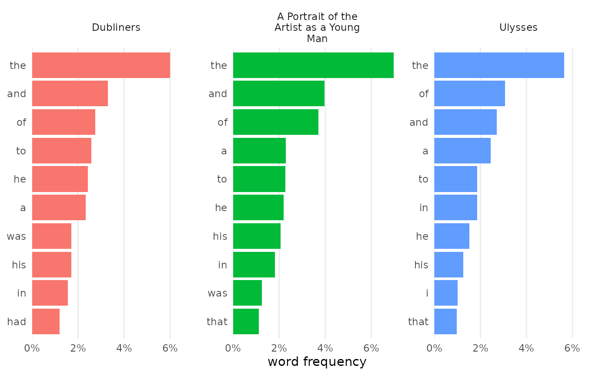
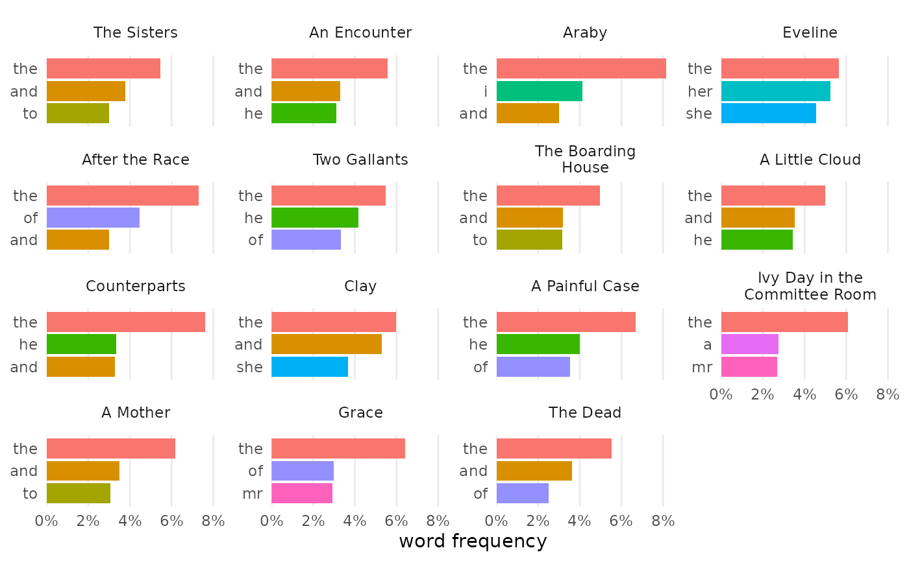
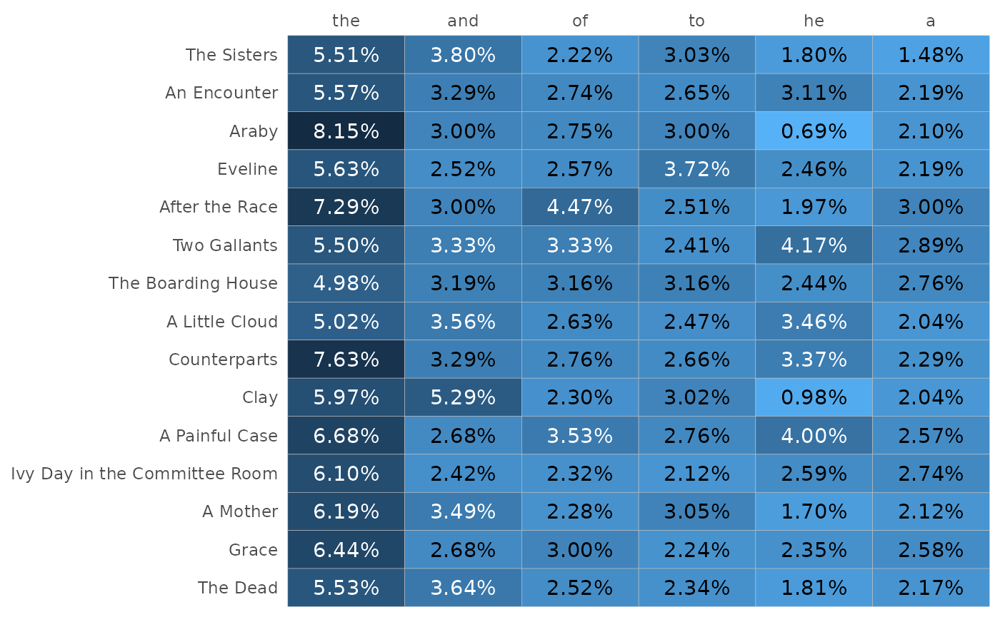
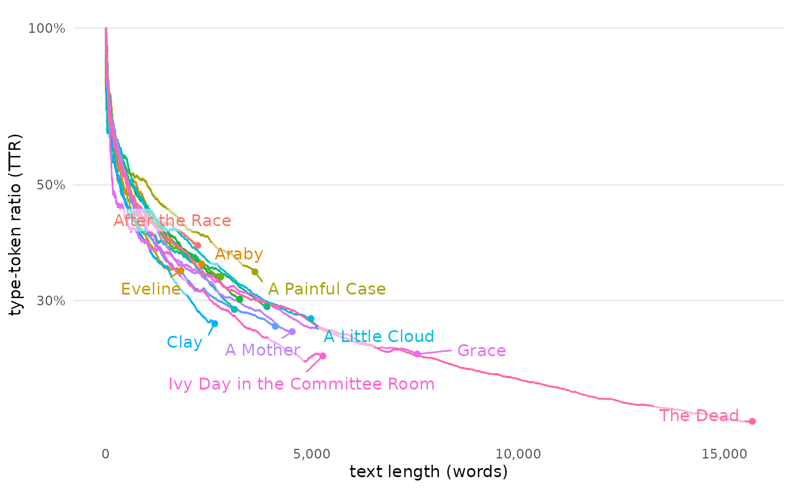
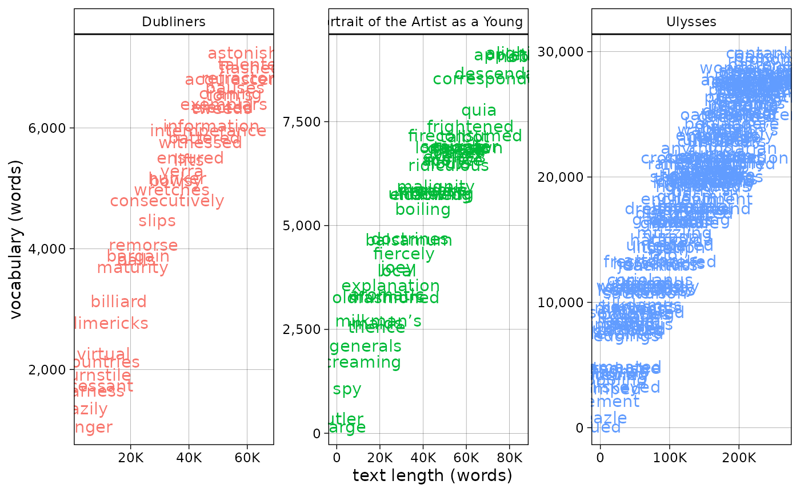
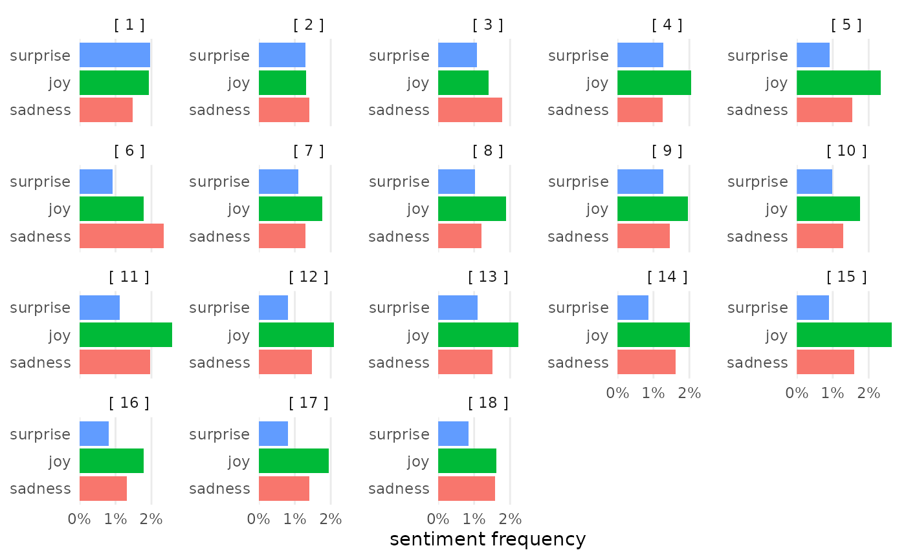
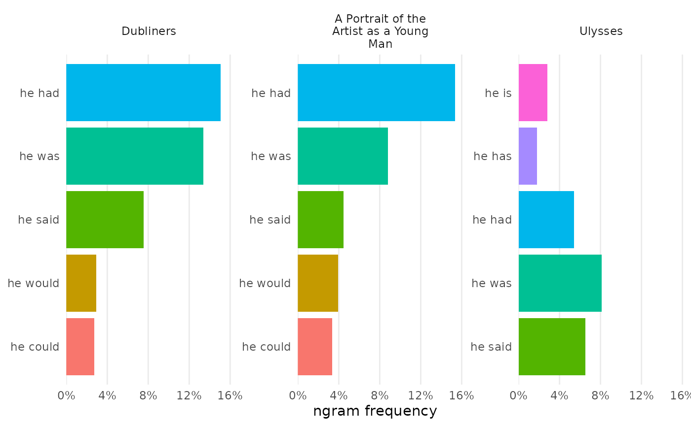

Introduction to tmtyro
Simplified workflows for text-mining tyros
Source:vignettes/articles/tmtyro.Rmd
tmtyro.Rmd#> Error in get(paste0(generic, ".", class), envir = get_method_env()) :
#> object 'type_sum.accel' not foundWorking with text as data is a multi-step process. After choosing and collecting documents, you’ll need to load them in some structured way before anything else. Only then is it possible to “do” text analysis: tagging parts of speech, normalizing by lemma, comparing features, measuring sentiment, and so on. Even then, you’ll need to communicate findings by preparing compelling explanations, tables, and visualizations of your results.
The tmtyro package aims to make these steps fast and easy.
- Purpose-built functions for collecting a corpus let you focus on what instead of how.
- Scalable functions for loading a corpus provide room for growth, from simple word count to grammar parsing and lemmatizing.
- Additional functions standardize approaches for measuring word use and vocabulary uniqueness, detecting sentiment, assessing term frequency–inverse document frequency, working with n-grams, and even building topic models.
- One simple function prepares publication-ready tables, automatically adjusting based on the kind of data used. Another simple function prepares compelling visualizations, returning clean, publication-ready figures.
- Every step is offered as a verb using complementary syntax. This keeps workflows easy to build, easy to understand, easy to explain, and easy to reproduce.
Preparing texts
tmtyro offers a few functions to gather and load texts for study:
-
get_gutenberg_corpus()caches the HTML version of books by their Project Gutenberg ID, parses their text and headers, and presents them in a table. -
get_micusp_corpus()caches papers from the Michigan Corpus of Upper-level Student Papers, parses them for metadata and contents, and presents them in a table. -
download_once()caches an online file and passes the local path invisibly. -
load_texts()prepares a table in “tidytext” format with one word per row and columns for metadata. These texts can be loaded from a folder of files or passed from a table. Parameters allow for lemmatization, part-of-speech processing, and other options.
Other functions aid with preparing a corpus:
-
move_header_to_text()corrects overzealous identification of HTML headers when parsing books from Project Gutenberg. -
standardize_titles()converts a vector or column into title case, converts underscores with spaces, and optionally removes initial articles. -
identify_by()sets a column of metadata to serve as document marker.
Get a corpus
Collecting texts from Project Gutenberg will be a common first step
for many. The function get_gutenberg_corpus() needs only
the Gutenberg ID number, found in the book’s URL. The resulting table
draws metadata from the gutenbergr package, with columns for
“gutenberg_id”, “title”, “author”, headers such as those used for
chapters, and “text.”
library(tmtyro)
joyce <- get_gutenberg_corpus(c(2814, 4217, 4300))
joyce
#> # A tibble: 10,810 × 7
#> gutenberg_id title author part section subsection text
#> <int> <chr> <chr> <chr> <chr> <chr> <chr>
#> 1 2814 Dubliners Joyce, James THE SISTERS NA NA There was…
#> 2 2814 Dubliners Joyce, James THE SISTERS NA NA Old Cotte…
#> 3 2814 Dubliners Joyce, James THE SISTERS NA NA “No, I wo…
#> 4 2814 Dubliners Joyce, James THE SISTERS NA NA He began …
#> 5 2814 Dubliners Joyce, James THE SISTERS NA NA “I have m…
#> 6 2814 Dubliners Joyce, James THE SISTERS NA NA He began …
#> 7 2814 Dubliners Joyce, James THE SISTERS NA NA “Well, so…
#> 8 2814 Dubliners Joyce, James THE SISTERS NA NA “Who?” sa…
#> 9 2814 Dubliners Joyce, James THE SISTERS NA NA “Father F…
#> 10 2814 Dubliners Joyce, James THE SISTERS NA NA “Is he de…
#> # ℹ 10,800 more rowsIn some cases, headers may make better sense if read as part of the text, as in the “Aeolus” chapter of Ulysses, where frequent newspaper headlines pepper the page:
ulysses <- get_gutenberg_corpus(4300)
# dplyr is used here to choose a smaller example for comparison
ulysses |>
dplyr::filter(section == "[ 7 ]")
#> # A tibble: 476 × 7
#> gutenberg_id title author part section subsection text
#> <int> <chr> <chr> <chr> <chr> <chr> <chr>
#> 1 4300 Ulysses Joyce, James — II — [ 7 ] IN THE HEART OF THE H… Befo…
#> 2 4300 Ulysses Joyce, James — II — [ 7 ] IN THE HEART OF THE H… —Rat…
#> 3 4300 Ulysses Joyce, James — II — [ 7 ] IN THE HEART OF THE H… —Com…
#> 4 4300 Ulysses Joyce, James — II — [ 7 ] IN THE HEART OF THE H… Righ…
#> 5 4300 Ulysses Joyce, James — II — [ 7 ] IN THE HEART OF THE H… —Sta…
#> 6 4300 Ulysses Joyce, James — II — [ 7 ] THE WEARER OF THE CRO… Unde…
#> 7 4300 Ulysses Joyce, James — II — [ 7 ] GENTLEMEN OF THE PRESS Gros…
#> 8 4300 Ulysses Joyce, James — II — [ 7 ] GENTLEMEN OF THE PRESS —The…
#> 9 4300 Ulysses Joyce, James — II — [ 7 ] GENTLEMEN OF THE PRESS —Jus…
#> 10 4300 Ulysses Joyce, James — II — [ 7 ] GENTLEMEN OF THE PRESS The …
#> # ℹ 466 more rowsThese can be corrected with move_header_to_text().
ulysses <- get_gutenberg_corpus(4300) |>
move_header_to_text(subsection)
# dplyr is used here to choose a smaller example for comparison
ulysses |>
dplyr::filter(section == "[ 7 ]")
#> # A tibble: 539 × 6
#> gutenberg_id title author part section text
#> <int> <chr> <chr> <chr> <chr> <chr>
#> 1 4300 Ulysses Joyce, James — II — [ 7 ] IN THE HEART OF THE HIBERNI…
#> 2 4300 Ulysses Joyce, James — II — [ 7 ] Before Nelson’s pillar tram…
#> 3 4300 Ulysses Joyce, James — II — [ 7 ] —Rathgar and Terenure!
#> 4 4300 Ulysses Joyce, James — II — [ 7 ] —Come on, Sandymount Green!
#> 5 4300 Ulysses Joyce, James — II — [ 7 ] Right and left parallel cla…
#> 6 4300 Ulysses Joyce, James — II — [ 7 ] —Start, Palmerston Park!
#> 7 4300 Ulysses Joyce, James — II — [ 7 ] THE WEARER OF THE CROWN
#> 8 4300 Ulysses Joyce, James — II — [ 7 ] Under the porch of the gene…
#> 9 4300 Ulysses Joyce, James — II — [ 7 ] GENTLEMEN OF THE PRESS
#> 10 4300 Ulysses Joyce, James — II — [ 7 ] Grossbooted draymen rolled …
#> # ℹ 529 more rowsHeaders can be moved for specific texts in a corpus by specifying a
filter like title == "Ulysses":
joyce <- joyce |>
move_header_to_text(subsection, title == "Ulysses")
joyce |>
dplyr::filter(section == "[ 7 ]")
#> # A tibble: 539 × 6
#> gutenberg_id title author part section text
#> <int> <chr> <chr> <chr> <chr> <chr>
#> 1 4300 Ulysses Joyce, James — II — [ 7 ] IN THE HEART OF THE HIBERNI…
#> 2 4300 Ulysses Joyce, James — II — [ 7 ] Before Nelson’s pillar tram…
#> 3 4300 Ulysses Joyce, James — II — [ 7 ] —Rathgar and Terenure!
#> 4 4300 Ulysses Joyce, James — II — [ 7 ] —Come on, Sandymount Green!
#> 5 4300 Ulysses Joyce, James — II — [ 7 ] Right and left parallel cla…
#> 6 4300 Ulysses Joyce, James — II — [ 7 ] —Start, Palmerston Park!
#> 7 4300 Ulysses Joyce, James — II — [ 7 ] THE WEARER OF THE CROWN
#> 8 4300 Ulysses Joyce, James — II — [ 7 ] Under the porch of the gene…
#> 9 4300 Ulysses Joyce, James — II — [ 7 ] GENTLEMEN OF THE PRESS
#> 10 4300 Ulysses Joyce, James — II — [ 7 ] Grossbooted draymen rolled …
#> # ℹ 529 more rowsLoad texts
load_texts() prepares a set of documents for study,
either from a table or from a folder of files.
From a table
A table like the one prepared by get_gutenberg_corpus()
can be prepared in tidytext format with one word per row using
load_texts().
corpus_ulysses <- ulysses |>
load_texts()
corpus_ulysses
#> # A tibble: 265,043 × 6
#> doc_id title author part section word
#> <int> <chr> <chr> <chr> <chr> <chr>
#> 1 4300 Ulysses Joyce, James — I — [ 1 ] stately
#> 2 4300 Ulysses Joyce, James — I — [ 1 ] plump
#> 3 4300 Ulysses Joyce, James — I — [ 1 ] buck
#> 4 4300 Ulysses Joyce, James — I — [ 1 ] mulligan
#> 5 4300 Ulysses Joyce, James — I — [ 1 ] came
#> 6 4300 Ulysses Joyce, James — I — [ 1 ] from
#> 7 4300 Ulysses Joyce, James — I — [ 1 ] the
#> 8 4300 Ulysses Joyce, James — I — [ 1 ] stairhead
#> 9 4300 Ulysses Joyce, James — I — [ 1 ] bearing
#> 10 4300 Ulysses Joyce, James — I — [ 1 ] a
#> # ℹ 265,033 more rowsFrom files
If text files are already collected in a folder on disk, they can be
prepared in a table by passing the path to the folder inside
load_texts(). Used this way, load_texts() will
load up every file using the “txt” file extension, populating the
doc_id column with the first part of the file name.
corpus_austen <- load_texts("austen")In this example, the “austen” folder is found within the current
project. If it was instead found somewhere else on the computer, the
complete path can be passed like this:load_texts("~/corpora/austen")
Choose a different doc_id
Documents loaded from get_gutenberg_corpus() use the
gutenberg_id column as their document identifier.
corpus_dubliners <- get_gutenberg_corpus(2814) |>
load_texts(lemma = TRUE, pos = TRUE)
corpus_dubliners
#> # A tibble: 67,885 × 7
#> doc_id title author part word pos lemma
#> <int> <chr> <chr> <chr> <chr> <chr> <chr>
#> 1 2814 Dubliners Joyce, James THE SISTERS there EX there
#> 2 2814 Dubliners Joyce, James THE SISTERS was VBD be
#> 3 2814 Dubliners Joyce, James THE SISTERS no DT no
#> 4 2814 Dubliners Joyce, James THE SISTERS hope NN hope
#> 5 2814 Dubliners Joyce, James THE SISTERS for IN for
#> 6 2814 Dubliners Joyce, James THE SISTERS him PRP him
#> 7 2814 Dubliners Joyce, James THE SISTERS this DT this
#> 8 2814 Dubliners Joyce, James THE SISTERS time NN time
#> 9 2814 Dubliners Joyce, James THE SISTERS it PRP it
#> 10 2814 Dubliners Joyce, James THE SISTERS was VBD be
#> # ℹ 67,875 more rowsIf a different column is preferred, identify_by() makes
the switch. In this example from Dubliners, for instance, each
story’s title is shown under “part”. identify_by() makes it
easy to identify documents by that column:
corpus_dubliners <- corpus_dubliners |>
identify_by(part)
corpus_dubliners
#> # A tibble: 67,885 × 7
#> doc_id title author part word pos lemma
#> <fct> <chr> <chr> <chr> <chr> <chr> <chr>
#> 1 THE SISTERS Dubliners Joyce, James THE SISTERS there EX there
#> 2 THE SISTERS Dubliners Joyce, James THE SISTERS was VBD be
#> 3 THE SISTERS Dubliners Joyce, James THE SISTERS no DT no
#> 4 THE SISTERS Dubliners Joyce, James THE SISTERS hope NN hope
#> 5 THE SISTERS Dubliners Joyce, James THE SISTERS for IN for
#> 6 THE SISTERS Dubliners Joyce, James THE SISTERS him PRP him
#> 7 THE SISTERS Dubliners Joyce, James THE SISTERS this DT this
#> 8 THE SISTERS Dubliners Joyce, James THE SISTERS time NN time
#> 9 THE SISTERS Dubliners Joyce, James THE SISTERS it PRP it
#> 10 THE SISTERS Dubliners Joyce, James THE SISTERS was VBD be
#> # ℹ 67,875 more rowsStandardize titles
standardize_titles() converts titles to something
cleaner by adopting title case.
before <- unique(corpus_dubliners$doc_id)
corpus_dubliners <- corpus_dubliners |>
standardize_titles()
after <- unique(corpus_dubliners$doc_id)
data.frame(before, after)
#> before after
#> 1 THE SISTERS The Sisters
#> 2 AN ENCOUNTER An Encounter
#> 3 ARABY Araby
#> 4 EVELINE Eveline
#> 5 AFTER THE RACE After the Race
#> 6 TWO GALLANTS Two Gallants
#> 7 THE BOARDING HOUSE The Boarding House
#> 8 A LITTLE CLOUD A Little Cloud
#> 9 COUNTERPARTS Counterparts
#> 10 CLAY Clay
#> 11 A PAINFUL CASE A Painful Case
#> 12 IVY DAY IN THE COMMITTEE ROOM Ivy Day in the Committee Room
#> 13 A MOTHER A Mother
#> 14 GRACE Grace
#> 15 THE DEAD The DeadStudying texts
Useful at many stages of work with a corpus,
contextualize() shows the context of a search term, with an
adjustable window on either side and options for searching with regular
expressions. Most other functions for studying texts follow a
predictable naming convention:
-
add_frequency()adds a column for word frequencies. -
add_vocabulary()adds columns measuring the lexical variety of texts. -
add_sentiment()adds a column of sentiment identifiers from a chosen lexicon. -
add_ngrams()adds columns of words for bigrams, trigrams, or more.
Not every method preserves the size or shape of data passed to it:
-
summarize_tf_idf()returns a data frame for every token in each document in a corpus, with columns indicating weights for term frequency-inverse document frequency.
Along with these, other functions assist with the process:
-
drop_na()drops rows with missing data in any column or in specified columns. -
combine_ngrams()combines multiple columns for n-grams into one. -
separate_ngrams()separatesa single column of n-grams into one column per word.
But understanding context of key words with
show_context() might be especially helpful.
Showing context
contextualize() finds uses of a word within a corpus and
returns a window of context around each use.
corpus_dubliners |>
contextualize("snow")
#> mat scraping the snow from his goloshes
#> light fringe of snow lay like a
#> home in the snow if she were
#> the park the snow would be lying
#> standing in the snow on the quayBy default, contextualize() returns five results,
showing a window of three words before and after an exact search term.
Adjusting limit changes the number of results, with
limit = 0 returning a table. Other options include
window to adjust the number of words shown and
regex to accept partial matches.
corpus_dubliners |>
contextualize(regex = "sno",
window = 2,
limit = 0)
#> # A tibble: 22 × 4
#> doc_id word index context
#> <fct> <chr> <int> <chr>
#> 1 After the Race snorting 1088 to the SNOrting motor the
#> 2 The Dead snow 610 scraping the SNOw from his
#> 3 The Dead snow 705 fringe of SNOw lay like
#> 4 The Dead snow_stiffened 739 through the SNOw_stiffened frieze a
#> 5 The Dead snowing 754 is it SNOwing again mr
#> 6 The Dead snow 1660 in the SNOw if she
#> 7 The Dead snow 5411 park the SNOw would be
#> 8 The Dead snow 8739 in the SNOw on the
#> 9 The Dead snow 8773 weighted with SNOw the wellington
#> 10 The Dead snow 8782 cap of SNOw that flashed
#> # ℹ 12 more rowsWhen loading texts, load_texts() provides an option to
keep original capitalization and punctuation. This option doesn’t always
work, and it seems incompatible with the current implementation of
part-of-speech parsing, so it’s not always appropriate. But using
contextualize() on corpora loaded with
load_texts(keep_original = TRUE) will show search terms
much closer to their original context:
corpus_joyce <- joyce |>
load_texts(keep_original = TRUE) |>
identify_by(title)
tundish <-
corpus_joyce |>
contextualize("tundish", limit = 1:7)
#> it not a tundish? —What is a
#> —What is a tundish? —That. The the
#> that called a tundish in Ireland? asked
#> is called a tundish in Lower Drumcondra,
#> best English. —A tundish, said the dean
#> word yet again. —Tundish! Well now, that
#> April 13. That tundish has been onEven when limit is set to some value other than 0, the
table of results is returned invisibly for later recall.
tundish
#> # A tibble: 7 × 4
#> doc_id word index context
#> <fct> <chr> <int> <chr>
#> 1 A Portrait of the Artist as a Young Man tundish 63827 it not a TUNDISH? —What…
#> 2 A Portrait of the Artist as a Young Man tundish 63831 —What is a TUNDISH? —Th…
#> 3 A Portrait of the Artist as a Young Man tundish 63840 that called a TUNDISH i…
#> 4 A Portrait of the Artist as a Young Man tundish 63858 is called a TUNDISH in …
#> 5 A Portrait of the Artist as a Young Man tundish 63872 best English. —A TUNDIS…
#> 6 A Portrait of the Artist as a Young Man tundish 64122 word yet again. —TUNDIS…
#> 7 A Portrait of the Artist as a Young Man tundish 84352 April 13. That TUNDISH …Word frequencies
add_frequency() adds word counts for each document in a
new column, n.
counts_dubliners <-
corpus_dubliners |>
add_frequency()
counts_dubliners
#> # A tibble: 67,885 × 8
#> doc_id title author part word pos lemma n
#> <fct> <chr> <chr> <chr> <chr> <chr> <chr> <int>
#> 1 The Sisters Dubliners Joyce, James THE SISTERS there EX there 15
#> 2 The Sisters Dubliners Joyce, James THE SISTERS was VBD be 57
#> 3 The Sisters Dubliners Joyce, James THE SISTERS no DT no 16
#> 4 The Sisters Dubliners Joyce, James THE SISTERS hope NN hope 1
#> 5 The Sisters Dubliners Joyce, James THE SISTERS for IN for 32
#> 6 The Sisters Dubliners Joyce, James THE SISTERS him PRP him 43
#> 7 The Sisters Dubliners Joyce, James THE SISTERS this DT this 6
#> 8 The Sisters Dubliners Joyce, James THE SISTERS time NN time 3
#> 9 The Sisters Dubliners Joyce, James THE SISTERS it PRP it 40
#> 10 The Sisters Dubliners Joyce, James THE SISTERS was VBD be 57
#> # ℹ 67,875 more rowsTo count by some other column, indicate it in the parentheses:
corpus_dubliners |>
add_frequency(lemma)
#> # A tibble: 67,885 × 8
#> doc_id title author part word pos lemma n
#> <fct> <chr> <chr> <chr> <chr> <chr> <chr> <int>
#> 1 The Sisters Dubliners Joyce, James THE SISTERS there EX there 15
#> 2 The Sisters Dubliners Joyce, James THE SISTERS was VBD be 98
#> 3 The Sisters Dubliners Joyce, James THE SISTERS no DT no 16
#> 4 The Sisters Dubliners Joyce, James THE SISTERS hope NN hope 1
#> 5 The Sisters Dubliners Joyce, James THE SISTERS for IN for 32
#> 6 The Sisters Dubliners Joyce, James THE SISTERS him PRP him 43
#> 7 The Sisters Dubliners Joyce, James THE SISTERS this DT this 9
#> 8 The Sisters Dubliners Joyce, James THE SISTERS time NN time 3
#> 9 The Sisters Dubliners Joyce, James THE SISTERS it PRP it 40
#> 10 The Sisters Dubliners Joyce, James THE SISTERS was VBD be 98
#> # ℹ 67,875 more rowsVocabulary richness
add_vocabulary() adds measurements of vocabulary
richness, including cumulative vocabulary size, indicators of hapax
legomena, and markers of progress.
vocab_dubliners <-
corpus_dubliners |>
add_vocabulary()
vocab_dubliners
#> # A tibble: 67,885 × 14
#> doc_id title author part word pos lemma new_word hapax vocabulary ttr
#> <fct> <chr> <chr> <chr> <chr> <chr> <chr> <lgl> <lgl> <int> <dbl>
#> 1 The Sis… Dubl… Joyce… THE … there EX there TRUE FALSE 1 1
#> 2 The Sis… Dubl… Joyce… THE … was VBD be TRUE FALSE 2 1
#> 3 The Sis… Dubl… Joyce… THE … no DT no TRUE FALSE 3 1
#> 4 The Sis… Dubl… Joyce… THE … hope NN hope TRUE TRUE 4 1
#> 5 The Sis… Dubl… Joyce… THE … for IN for TRUE FALSE 5 1
#> 6 The Sis… Dubl… Joyce… THE … him PRP him TRUE FALSE 6 1
#> 7 The Sis… Dubl… Joyce… THE … this DT this TRUE FALSE 7 1
#> 8 The Sis… Dubl… Joyce… THE … time NN time TRUE FALSE 8 1
#> 9 The Sis… Dubl… Joyce… THE … it PRP it TRUE FALSE 9 1
#> 10 The Sis… Dubl… Joyce… THE … was VBD be FALSE FALSE 9 0.9
#> # ℹ 67,875 more rows
#> # ℹ 3 more variables: hir <dbl>, progress_words <int>, progress_percent <dbl>Sentiment
add_sentiment() adds measurements of sentiment using the
“Bing” lexicon by default.
sentiment_dubliners <- corpus_dubliners |>
add_sentiment()
sentiment_dubliners#> # A tibble: 67,886 × 8
#> doc_id title author part word pos lemma sentiment
#> <fct> <chr> <chr> <chr> <chr> <chr> <chr> <chr>
#> 1 The Sisters Dubliners Joyce, James THE SISTERS there EX there NA
#> 2 The Sisters Dubliners Joyce, James THE SISTERS was VBD be NA
#> 3 The Sisters Dubliners Joyce, James THE SISTERS no DT no NA
#> 4 The Sisters Dubliners Joyce, James THE SISTERS hope NN hope NA
#> 5 The Sisters Dubliners Joyce, James THE SISTERS for IN for NA
#> 6 The Sisters Dubliners Joyce, James THE SISTERS him PRP him NA
#> 7 The Sisters Dubliners Joyce, James THE SISTERS this DT this NA
#> 8 The Sisters Dubliners Joyce, James THE SISTERS time NN time NA
#> 9 The Sisters Dubliners Joyce, James THE SISTERS it PRP it NA
#> 10 The Sisters Dubliners Joyce, James THE SISTERS was VBD be NA
#> # ℹ 67,876 more rowsDropping empty rows
Since many words may not be found in a given sentiment lexicon,
drop_na() makes it easy to remove empty rows.
sentiment_dubliners |>
drop_na(sentiment)
#> # A tibble: 3,787 × 8
#> doc_id title author part word pos lemma sentiment
#> <fct> <chr> <chr> <chr> <chr> <chr> <chr> <chr>
#> 1 The Sisters Dubliners Joyce, James THE SISTERS evenly RB even… positive
#> 2 The Sisters Dubliners Joyce, James THE SISTERS dead JJ dead negative
#> 3 The Sisters Dubliners Joyce, James THE SISTERS darkened VBN dark… negative
#> 4 The Sisters Dubliners Joyce, James THE SISTERS blind NN blind negative
#> 5 The Sisters Dubliners Joyce, James THE SISTERS idle VB idle negative
#> 6 The Sisters Dubliners Joyce, James THE SISTERS strange… RB stra… negative
#> 7 The Sisters Dubliners Joyce, James THE SISTERS like IN like positive
#> 8 The Sisters Dubliners Joyce, James THE SISTERS like IN like positive
#> 9 The Sisters Dubliners Joyce, James THE SISTERS sinful JJ sinf… negative
#> 10 The Sisters Dubliners Joyce, James THE SISTERS fear NN fear negative
#> # ℹ 3,777 more rowsChoosing a sentiment lexicon
The lexicon can be chosen at measurement.
sentiment_ulysses <- ulysses |>
load_texts() |>
identify_by(section) |>
add_sentiment(lexicon = "nrc")
sentiment_ulysses |>
drop_na(sentiment)#> # A tibble: 63,006 × 7
#> doc_id title author part section word sentiment
#> <fct> <chr> <chr> <chr> <chr> <chr> <chr>
#> 1 [ 1 ] Ulysses Joyce, James — I — [ 1 ] stately positive
#> 2 [ 1 ] Ulysses Joyce, James — I — [ 1 ] plump anticipation
#> 3 [ 1 ] Ulysses Joyce, James — I — [ 1 ] buck fear
#> 4 [ 1 ] Ulysses Joyce, James — I — [ 1 ] buck negative
#> 5 [ 1 ] Ulysses Joyce, James — I — [ 1 ] buck positive
#> 6 [ 1 ] Ulysses Joyce, James — I — [ 1 ] buck surprise
#> 7 [ 1 ] Ulysses Joyce, James — I — [ 1 ] razor fear
#> 8 [ 1 ] Ulysses Joyce, James — I — [ 1 ] dark sadness
#> 9 [ 1 ] Ulysses Joyce, James — I — [ 1 ] fearful fear
#> 10 [ 1 ] Ulysses Joyce, James — I — [ 1 ] fearful negative
#> # ℹ 62,996 more rowsN-grams
Following the same pattern, add_ngrams() adds columns
for n-length phrases of words. By default, it prepares bigrams (or
2-grams).
bigrams_joyce <- corpus_joyce |>
add_ngrams()
bigrams_joyce
#> # A tibble: 417,846 × 8
#> doc_id title author part section original word_1 word_2
#> <fct> <chr> <chr> <chr> <chr> <chr> <chr> <chr>
#> 1 Dubliners Dubliners Joyce, James THE SISTERS NA There there was
#> 2 Dubliners Dubliners Joyce, James THE SISTERS NA was was no
#> 3 Dubliners Dubliners Joyce, James THE SISTERS NA no no hope
#> 4 Dubliners Dubliners Joyce, James THE SISTERS NA hope hope for
#> 5 Dubliners Dubliners Joyce, James THE SISTERS NA for for him
#> 6 Dubliners Dubliners Joyce, James THE SISTERS NA him him this
#> 7 Dubliners Dubliners Joyce, James THE SISTERS NA this this time
#> 8 Dubliners Dubliners Joyce, James THE SISTERS NA time: time it
#> 9 Dubliners Dubliners Joyce, James THE SISTERS NA it it was
#> 10 Dubliners Dubliners Joyce, James THE SISTERS NA was was the
#> # ℹ 417,836 more rowsOther n-grams can be chosen by passing a vector of numbers.
trigrams_joyce <- corpus_joyce |>
add_ngrams(1:3)
trigrams_joyce
#> # A tibble: 417,846 × 9
#> doc_id title author part section original word_1 word_2 word_3
#> <fct> <chr> <chr> <chr> <chr> <chr> <chr> <chr> <chr>
#> 1 Dubliners Dubliners Joyce, James THE S… NA There there was no
#> 2 Dubliners Dubliners Joyce, James THE S… NA was was no hope
#> 3 Dubliners Dubliners Joyce, James THE S… NA no no hope for
#> 4 Dubliners Dubliners Joyce, James THE S… NA hope hope for him
#> 5 Dubliners Dubliners Joyce, James THE S… NA for for him this
#> 6 Dubliners Dubliners Joyce, James THE S… NA him him this time
#> 7 Dubliners Dubliners Joyce, James THE S… NA this this time it
#> 8 Dubliners Dubliners Joyce, James THE S… NA time: time it was
#> 9 Dubliners Dubliners Joyce, James THE S… NA it it was the
#> 10 Dubliners Dubliners Joyce, James THE S… NA was was the third
#> # ℹ 417,836 more rowsTf-idf
add_tf_idf() adds measurements of term frequency
(tf), inverse document frequency (idf), and
combined term frequency–inverse document frequency
(tf_idf).
corpus_dubliners |>
add_tf_idf()
#> # A tibble: 67,885 × 11
#> doc_id title author part word pos lemma n tf idf tf_idf
#> <fct> <chr> <chr> <chr> <chr> <chr> <chr> <int> <dbl> <dbl> <dbl>
#> 1 The Sisters Dubl… Joyce… THE … there EX there 15 0.0048 0 0
#> 2 The Sisters Dubl… Joyce… THE … was VBD be 57 0.0182 0 0
#> 3 The Sisters Dubl… Joyce… THE … no DT no 16 0.00512 0 0
#> 4 The Sisters Dubl… Joyce… THE … hope NN hope 1 0.00032 0.511 1.63e-4
#> 5 The Sisters Dubl… Joyce… THE … for IN for 32 0.0102 0 0
#> 6 The Sisters Dubl… Joyce… THE … him PRP him 43 0.0138 0 0
#> 7 The Sisters Dubl… Joyce… THE … this DT this 6 0.00192 0.0690 1.32e-4
#> 8 The Sisters Dubl… Joyce… THE … time NN time 3 0.00096 0 0
#> 9 The Sisters Dubl… Joyce… THE … it PRP it 40 0.0128 0 0
#> 10 The Sisters Dubl… Joyce… THE … was VBD be 57 0.0182 0 0
#> # ℹ 67,875 more rowsTerm frequency–inverse document frequency is most commonly used as a
way of summarizing language used, paying less attention word order and
reducing documents to one instance of each token. To study texts this
way, summarize_tf_idf() returns a table arranged in
descending strength of tf-idf.
tfidf_dubliners <- corpus_dubliners |>
summarize_tf_idf()
tfidf_dubliners
#> # A tibble: 17,656 × 6
#> doc_id word n tf idf tf_idf
#> <fct> <chr> <int> <dbl> <dbl> <dbl>
#> 1 Clay maria 40 0.0151 2.71 0.0409
#> 2 Two Gallants corley 46 0.0117 2.71 0.0318
#> 3 After the Race jimmy 24 0.0107 2.71 0.0291
#> 4 Ivy Day in the Committee Room henchy 53 0.0101 2.71 0.0272
#> 5 A Little Cloud gallaher 48 0.00964 2.71 0.0261
#> 6 The Dead gabriel 142 0.00906 2.71 0.0245
#> 7 Grace kernan 66 0.00873 2.71 0.0236
#> 8 Ivy Day in the Committee Room o’connor 45 0.00854 2.71 0.0231
#> 9 A Little Cloud chandler 41 0.00823 2.71 0.0223
#> 10 A Mother kearney 50 0.0110 2.01 0.0223
#> # ℹ 17,646 more rowsTf-idf’s method understandably emphasizes proper nouns that are
unique to each document. The remove_names argument in
load_texts() can help to filter out words that appear only
in capitalized form. Removing names from Dubliners makes a
noticeable difference in tf-idf results:
tfidf_dubliners <- get_gutenberg_corpus(2814) |>
load_texts(remove_names = TRUE) |>
identify_by(part) |>
standardize_titles() |>
summarize_tf_idf()
tfidf_dubliners
#> # A tibble: 16,721 × 6
#> doc_id word n tf idf tf_idf
#> <fct> <chr> <int> <dbl> <dbl> <dbl>
#> 1 The Dead aunt 101 0.00693 1.61 0.0112
#> 2 Araby bazaar 9 0.00406 2.71 0.0110
#> 3 The Sisters aunt 19 0.00649 1.61 0.0104
#> 4 After the Race cars 6 0.00286 2.71 0.00773
#> 5 An Encounter we 58 0.0189 0.405 0.00767
#> 6 After the Race car 11 0.00524 1.32 0.00692
#> 7 Eveline avenue 4 0.00225 2.71 0.00610
#> 8 Counterparts weathers 11 0.00283 2.01 0.00570
#> 9 Counterparts pa 8 0.00206 2.71 0.00557
#> 10 The Sisters snuff 6 0.00205 2.71 0.00555
#> # ℹ 16,711 more rowsIf load_texts() is used with pos = TRUE,
proper nouns can be filtered, but these tags are sometimes
inaccurate.
Preparing tables
tabulize() prepares tables for every kind of
measurement. This repetition makes it easy to see and appreciate
findings without struggling to recall a specialized function.
Corpus details
By default, tabulize() prepares a table showing the
lengths of each document.
corpus_joyce |>
tabulize()| words | |
|---|---|
| Dubliners | 67,945 |
| A Portrait of the Artist as a Young Man | 84,926 |
| Ulysses | 264,975 |
Word frequencies
After add_frequency(), tabulize() will show
the counts of the most-frequent words.
corpus_joyce |>
add_frequency() |>
tabulize()| word | n | |
|---|---|---|
| Ulysses | the | 14,952 |
| of | 8,143 | |
| and | 7,210 | |
| a | 6,501 | |
| to | 4,960 | |
| in | 4,945 | |
| A Portrait of the Artist as a Young Man | the | 5,913 |
| and | 3,375 | |
| of | 3,148 | |
| a | 1,948 | |
| to | 1,929 | |
| he | 1,855 | |
| Dubliners | the | 4,075 |
| and | 2,234 | |
| of | 1,867 | |
| to | 1,753 | |
| he | 1,646 | |
| a | 1,582 |
Vocabulary richness
When used after add_vocabulary(),
tabulize() prepares a clean summary table.
corpus_joyce |>
add_vocabulary() |>
tabulize()| length |
vocabulary
|
hapax
|
|||
|---|---|---|---|---|---|
| total | ratio | total | ratio | ||
| Dubliners | 67,945 | 7,339 | 0.108 | 3,683 | 0.054 |
| A Portrait of the Artist as a Young Man | 84,926 | 9,177 | 0.108 | 4,581 | 0.054 |
| Ulysses | 264,975 | 29,959 | 0.113 | 16,331 | 0.062 |
Sentiment
For sentiment analysis, tabulize() returns a summary of
figures for each document.
# dplyr is used here to choose a smaller example for comparison
sentiment_dubliners_part <- sentiment_dubliners |>
dplyr::filter(doc_id %in% c("The Sisters", "An Encounter", "Araby"))
sentiment_dubliners_part |>
tabulize()| sentiment | n | % | |
|---|---|---|---|
| The Sisters | negative | 106 | 3.39 |
| positive | 66 | 2.11 | |
| — | 2,953 | 94.50 | |
| An Encounter | negative | 88 | 2.70 |
| positive | 76 | 2.33 | |
| — | 3,091 | 94.96 | |
| Araby | negative | 85 | 3.64 |
| positive | 41 | 1.76 | |
| — | 2,206 | 94.60 |
Setting drop_na = TRUE removes rows without sentiment
measure.
sentiment_dubliners_part |>
tabulize(drop_na = TRUE)| sentiment | n | % | |
|---|---|---|---|
| The Sisters | negative | 106 | 61.63 |
| positive | 66 | 38.37 | |
| An Encounter | negative | 88 | 53.66 |
| positive | 76 | 46.34 | |
| Araby | negative | 85 | 67.46 |
| positive | 41 | 32.54 |
The ignore parameter aids in selecting a subset of
sentiments, converting the rest to NA.
# dplyr is used here to choose a smaller example for comparison
sentiment_ulysses_part <- sentiment_ulysses |>
dplyr::filter(doc_id %in% c("[ 1 ]", "[ 2 ]", "[ 3 ]"))
sentiment_ulysses_part |>
tabulize(ignore = c("anger", "anticipation", "disgust", "fear", "trust", "positive", "negative"))| sentiment | n | % | |
|---|---|---|---|
| [ 1 ] | joy | 161 | 1.93 |
| sadness | 124 | 1.48 | |
| surprise | 164 | 1.96 | |
| — | 7,910 | 94.63 | |
| [ 2 ] | joy | 65 | 1.32 |
| sadness | 69 | 1.40 | |
| surprise | 64 | 1.30 | |
| — | 4,735 | 95.99 | |
| [ 3 ] | joy | 89 | 1.40 |
| sadness | 114 | 1.79 | |
| surprise | 69 | 1.08 | |
| — | 6,104 | 95.73 |
N-grams
After add_ngrams(), tabulize() returns the
top n-grams per document. By default, the first six are shown for each
group, but rows can be chosen freely.
bigrams_joyce |>
tabulize(rows = 1:2)| ngram | n | % | |
|---|---|---|---|
| Ulysses | of the | 1,628 | 0.61 |
| in the | 1,447 | 0.55 | |
| A Portrait of the Artist as a Young Man | of the | 896 | 1.06 |
| in the | 499 | 0.59 | |
| Dubliners | of the | 507 | 0.75 |
| in the | 353 | 0.52 |
Tf-idf
For data frames prepared with add_tf_idf() or
summarize_tf_idf(), tabulize() returns six
rows of the top-scoring words for each document. This amount can be
adjusted with the rows argument.
tfidf_dubliners |>
tabulize(rows = 1:3)| word | n | tf | idf | tf_idf | |
|---|---|---|---|---|---|
| The Sisters | aunt | 19 | 0.00649 | 1.60944 | 0.01044 |
| snuff | 6 | 0.00205 | 2.70805 | 0.00555 | |
| me | 35 | 0.01195 | 0.31015 | 0.00371 | |
| An Encounter | we | 58 | 0.01890 | 0.40547 | 0.00767 |
| field | 9 | 0.00293 | 1.32176 | 0.00388 | |
| us | 27 | 0.00880 | 0.40547 | 0.00357 | |
| Araby | bazaar | 9 | 0.00406 | 2.70805 | 0.01100 |
| uncle | 5 | 0.00226 | 2.01490 | 0.00455 | |
| my | 43 | 0.01941 | 0.22314 | 0.00433 | |
| Eveline | avenue | 4 | 0.00225 | 2.70805 | 0.00610 |
| her | 96 | 0.05402 | 0.06899 | 0.00373 | |
| mother’s | 5 | 0.00281 | 1.32176 | 0.00372 | |
| After the Race | cars | 6 | 0.00286 | 2.70805 | 0.00773 |
| car | 11 | 0.00524 | 1.32176 | 0.00692 | |
| host | 3 | 0.00143 | 2.70805 | 0.00387 | |
| Two Gallants | peas | 4 | 0.00107 | 2.70805 | 0.00289 |
| ginger | 5 | 0.00134 | 2.01490 | 0.00269 | |
| companion’s | 3 | 0.00080 | 2.70805 | 0.00217 | |
| The Boarding House | reparation | 5 | 0.00184 | 2.70805 | 0.00498 |
| boarding | 4 | 0.00147 | 2.70805 | 0.00398 | |
| bread | 3 | 0.00110 | 2.70805 | 0.00299 | |
| A Little Cloud | child | 13 | 0.00282 | 1.09861 | 0.00309 |
| whisky | 7 | 0.00152 | 1.60944 | 0.00244 | |
| melancholy | 6 | 0.00130 | 1.60944 | 0.00209 | |
| Counterparts | weathers | 11 | 0.00283 | 2.01490 | 0.00570 |
| pa | 8 | 0.00206 | 2.70805 | 0.00557 | |
| desk | 8 | 0.00206 | 1.60944 | 0.00331 | |
| Clay | tip | 6 | 0.00237 | 2.01490 | 0.00478 |
| cakes | 4 | 0.00158 | 2.70805 | 0.00428 | |
| matron | 4 | 0.00158 | 2.70805 | 0.00428 | |
| A Painful Case | deceased | 6 | 0.00170 | 2.70805 | 0.00460 |
| engine | 5 | 0.00142 | 2.70805 | 0.00383 | |
| paragraph | 5 | 0.00142 | 2.70805 | 0.00383 | |
| Ivy Day in the Committee Room | he’s | 26 | 0.00554 | 0.91629 | 0.00508 |
| cigarette | 7 | 0.00149 | 2.01490 | 0.00301 | |
| bottle | 15 | 0.00320 | 0.91629 | 0.00293 | |
| A Mother | concert | 14 | 0.00337 | 1.60944 | 0.00543 |
| baritone | 8 | 0.00193 | 2.70805 | 0.00522 | |
| concerts | 10 | 0.00241 | 2.01490 | 0.00485 | |
| Grace | pope | 13 | 0.00191 | 2.01490 | 0.00385 |
| constable | 11 | 0.00162 | 2.01490 | 0.00326 | |
| gentlemen | 13 | 0.00191 | 1.09861 | 0.00210 | |
| The Dead | aunt | 101 | 0.00693 | 1.60944 | 0.01116 |
| snow | 20 | 0.00137 | 2.70805 | 0.00372 | |
| miss | 64 | 0.00439 | 0.76214 | 0.00335 |
Preparing figures
tmtyro provides many functions for preparing figures, but only one is typically needed:
-
visualize()works intuitively with tmtyro objects, preparing figures suited to whatever work is being done.
Customization is easy:
-
change_colors()provides a single interface for modifying filled and colored layers.
Corpus details
By default, visualize() prepares a figure showing the
lengths of each document.
corpus_joyce |>
visualize(inorder = FALSE)
Word counts
Using visualize() after add_frequency()
will chart the most frequent words of each document.
corpus_joyce |>
add_frequency() |>
visualize()
visualize() takes additional arguments for customizing
results.
counts_dubliners |>
visualize(rows = 1:3,
color_y = TRUE,
reorder_y = TRUE)Vocabulary richness
When used after add_vocabulary(),
visualize() charts each document by its length and the
number of unique tokens. A figure like this is useful to compare
documents by their rate of vocabulary growth.
corpus_dubliners |>
add_vocabulary() |>
visualize()
Other features, such as type-token ratio (“ttr”), hapax introduction ratio (“hir”), or a sampling of hapax legomena (“hapax”) can also be shown.
vocab_dubliners |>
visualize("ttr")
corpus_joyce |>
add_vocabulary() |>
visualize("hapax")
Sentiment
For sentiment analysis, visualize() allows for
comparison among documents in a set.
sentiment_dubliners |>
visualize()The ignore parameter stipulates values to remove from
the Y-axis to focus a figure.
sentiment_ulysses |>
visualize(ignore = c("anger", "anticipation", "disgust", "fear", "trust", "positive", "negative"))
N-grams
For n-grams, visualize() typically returns a network
visualization inspired by the bigram network in Text Mining with
R.
bigrams_joyce |>
visualize()
Combining n-grams
N-gram frequencies can be compared by combining them before visualization. Certain arguments allow for deviation from typical charts, including choosing the rows to chart and modifying colors to be set by values on the Y-axis.
bigrams_joyce |>
dplyr::filter(word_1 == "he") |>
combine_ngrams() |>
visualize(rows = 1:5, color_y = TRUE)Tf-idf
visualize() returns bars showing the top words for each
document. This can be a useful way to differentiate texts in a set from
each other. Because tfidf_dubliners was prepared with
load_texts(remove_names = TRUE), the resulting chart shows
clearer delineation of topics characteristic of the stories in Joyce’s
collection:
tfidf_dubliners |>
visualize(rows = 1:4)
Changing colors
change_colors() does what its name implies. By default,
it adopts the “Dark2” palette from Brewer.
sentiment_dubliners |>
visualize() |>
change_colors()Colors can be chosen manually.
library(ggraph)
bigrams_joyce |>
visualize(top_n = 60) |>
change_colors(c("#999999",
"orange",
"darkred"))
Optionally, use a named vector to set some colors by value instead of by order. By default unnamed colors are gray.
bigrams_joyce |>
dplyr::filter(word_1 == "he") |>
combine_ngrams() |>
visualize(rows = 1:5, color_y = TRUE, reorder_y = TRUE) |>
change_colors(c(
"he is" = "darkorange",
"he has" = "orange"))Unnamed colors fill in as needed.
bigrams_joyce |>
dplyr::filter(word_1 == "he") |>
combine_ngrams() |>
visualize(rows = 1:5, color_y = TRUE, reorder_y = TRUE) |>
change_colors(c(
"he is" = "darkorange",
"he has" = "orange",
"navy", "skyblue"))Or choose a predetermined color set and palette, as described in function documentation.
tfidf_dubliners |>
visualize(rows = 1:4) |>
change_colors(colorset = "viridis", palette = "mako", direction = -1)